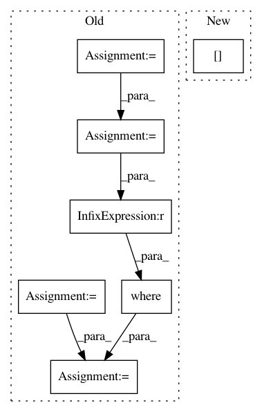

ad66bf0a8faf1f230891faea92c31d8a3a0baa3f,niftynet/engine/sampler_selective.py,,candidate_indices,#Any#Any#Any#,112
Before Change
final = np.pad(np.ones(shape_ones),
np.asarray(padding, dtype=np.int32),
"constant")
new_win_size = np.copy(win_sizes)
// new_win_size[:N_SPATIAL] = win_sizes[0]/8
window_mean = np.ones(new_win_size, dtype=np.int32)
mean_counts_size = []
// print(unique)
for value in unique:
// print(np.sum(data), "sum in data", np.prod(data.shape),
// " elements in data")
seg_label = np.copy(data)
seg_label = np.asarray(seg_label, dtype=np.int32)
// print(np.sum(seg_label))
seg_label = np.where(seg_label == value, np.ones_like(data),
np.zeros_like(data))
// print(np.sum(seg_label), " num values in seg_label ", value)
label_size = create_label_size_map(seg_label, 1)
// print(value, np.sum(seg_label), seg_label.shape,
// window_mean.shape, num_min)
// print("Begin fft convolve")
counts_window = fftconvolve(seg_label, window_mean, "same")
// print("finished fft convolve")
valid_places = np.where(counts_window > np.max([num_min, 1]),
np.ones_like(data), np.zeros_like(data))
counts_size = fftconvolve(
label_size * valid_places, window_mean, "same")
mean_counts_size_temp = np.nan_to_num(
counts_size * 1.0 / counts_window)
mean_counts_size_temp = np.where(counts_window == 0,
np.zeros_like(data),
mean_counts_size_temp)
// print(np.max(counts_size), " max size")
// print(np.sum(valid_places), value)
if value in list_labels:
// print(value, "in list_labels")
After Change
label_size * valid_places, window_ones, "same")
mean_counts_size_temp = np.nan_to_num(
counts_size * 1.0 / counts_window)
mean_counts_size_temp[counts_window == 0] = 0
// print(np.max(counts_size), " max size")
// print(np.sum(valid_places), value)
if value in list_labels:
In pattern: SUPERPATTERN
Frequency: 3
Non-data size: 7
Instances
Project Name: NifTK/NiftyNet
Commit Name: ad66bf0a8faf1f230891faea92c31d8a3a0baa3f
Time: 2017-10-04
Author: wenqi.li@ucl.ac.uk
File Name: niftynet/engine/sampler_selective.py
Class Name:
Method Name: candidate_indices
Project Name: aertslab/pySCENIC
Commit Name: 6d6a32dd677aa6097c4e77b359f81989c3e949af
Time: 2018-04-05
Author: vandesande.bram@gmail.com
File Name: src/pyscenic/rnkdb.py
Class Name:
Method Name: build_rankings
Project Name: sentinel-hub/eo-learn
Commit Name: d4be1706ea38f52a4291c01261be4875246a523c
Time: 2019-04-29
Author: matej.aleksandrov@sinergise.com
File Name: io/eolearn/io/local_io.py
Class Name: ExportToTiff
Method Name: _get_bands_subset